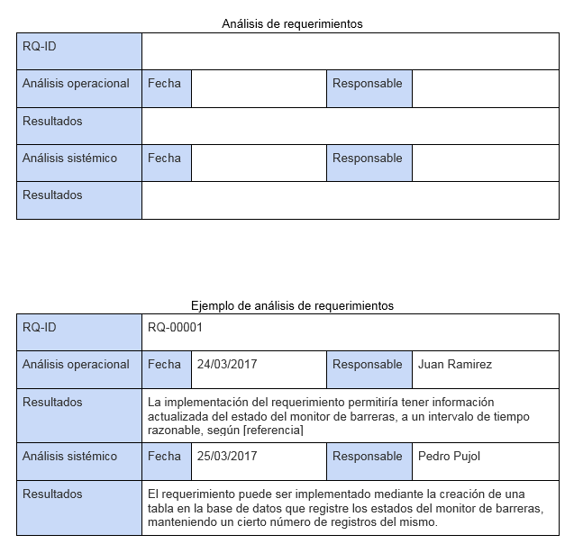
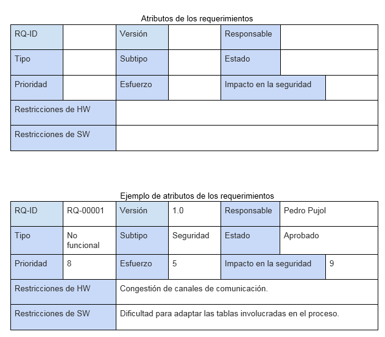
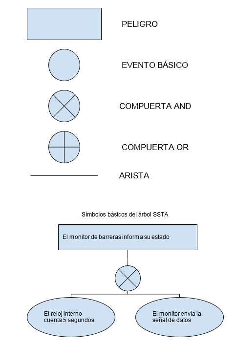
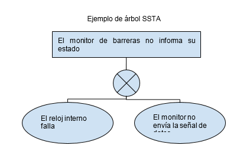
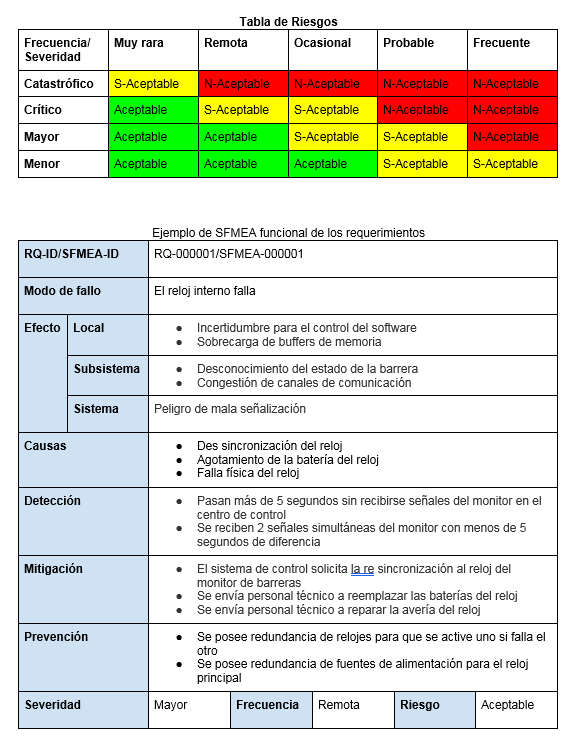

|
1- Realizar un análisis operacional de los requerimientos.
Se debe registar la información del análisis en las filas: 2 y 3 de la siguiente tabla:

|
2- Realizar un análisis sistémico de los requerimientos.
Se debe registar la información del análisis en las filas: 4 y 5 de la siguiente tabla:
|
3- Definir atributos característicos de los requerimientos
Se debe registar la información del análisis en las fila: 2 de la siguiente tabla:

|
4- Definir los distintos modos de comportamiento del software.
Árbol SSTA generado.


|
5- Definir los distintos modos de fallo del software.
6- Realizar el SFMEA funcional de los requerimientos especificados.
Cada caso puede generar un nuevo requerimiento de seguridad del software o del sistema, y se pueden descubrir nuevos
peligros.
Por cada evento básico detectado en el árbol SFTA anteriormente generado se realiza un análisis SFMEA.
Los grados de severidad, en orden ascendente pueden ser: menor, mayor, crítico o catastrófico.
La frecuencia de ocurrencia, en orden ascendente puede ser: muy rara, remota, ocasional, probable o frecuente.
El grado de riesgo, en orden ascendente puede ser: aceptable, semi aceptable o no aceptable.

Para evaluar este último se debe utilizar la Tabla de Riesgos que se propone a continuación.

|
7- Construir un glosario de términos
8- En caso de generarse nuevos requerimientos a partir de la especificación de los actuales, registrarlos.
|